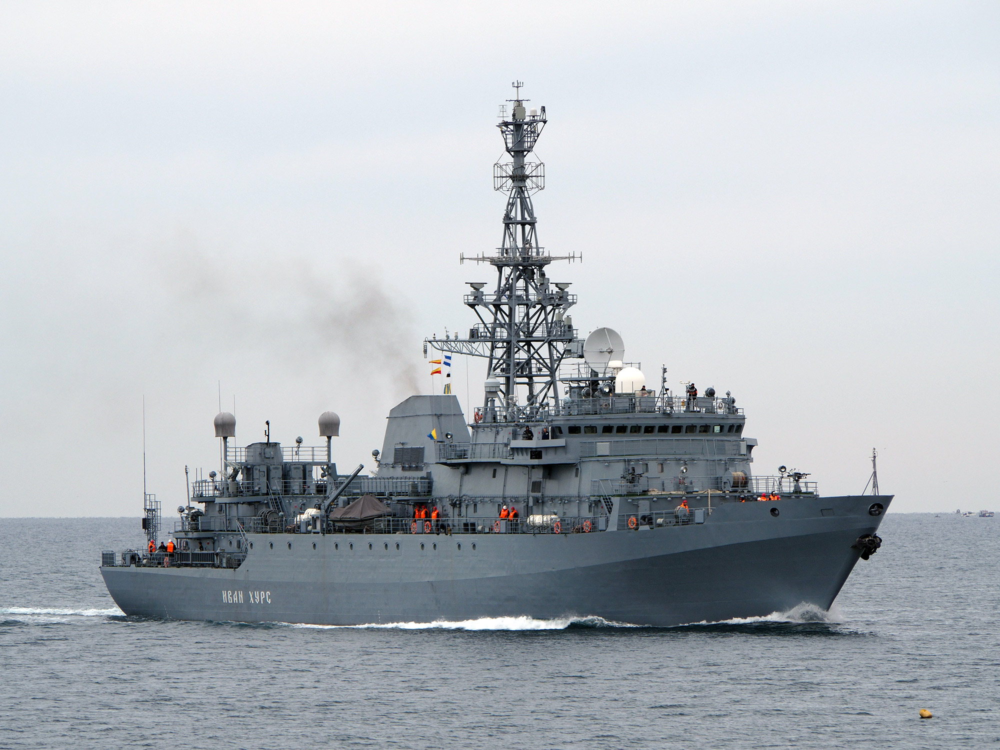

Морские дроны напали на корабль 24 мая неподалеку от Босфора, аппараты были уничтожены, корабль спустя два дня вернулся в Севастополь. Источник госагентства сказал, что устройства произведены на Западе, их наводили по данным США. Корабль Черноморского флота «Иван Хурс» был атакован беспилотными катерами, которые запустили украинские военные из военно-морского оперативного центра, открытого при участии США в Очакове, сообщил «РИА Новости» источник.
По его словам, морскими беспилотниками управляли с помощью вмонтированных Starlink, сами устройства произвели не на Украине, а на Западе. Целеуказание беспилотникам обеспечивали средства разведки США. Вероятно, аппараты передала Великобритания, которая имеет «большой опыт создания и боевого применения подобных систем в различных районах мирового океана».
«Несмотря на бравады киевских представителей о применении беспилотников собственного, то бишь украинского производства, их профиль говорит об обратном», — подчеркнул источник госагентства.
РБК направил запрос в Минобороны.